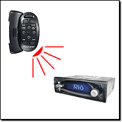
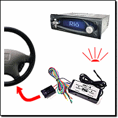
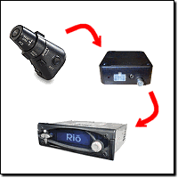
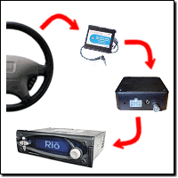

| · Where can I find basic information about car audio electronics and installation? |
| · Should I install the player myself, or should I have it installed by a professional? |
| · What are the most common installation issues? |
| · What exactly is a ground loop? |
| · If I am using a separate head unit, in what order should the outputs be connected? |
| · How do I run a subwoofer if the player doesn't have a subwoofer output? |
| · What are the known issues installing a Rio Car into my (model X) car? |
| · At what angle(s) can I mount it in the dash? |
| · What's the best way to keep the player safe from harm or theft? |
| · Can I run 4 volt outputs into 1 volt inputs? |
· Can I hook up a steering wheel remote?
(Entry last updated on January 16th, 2012)Yes. There are a few different options for steering wheel mounted remote control.
Third-party Infrared Steering Wheel Remotes
|  |
These are infrared devices which attach to your steering wheel and work like an infrared remote control. Some clamp to the wheel itself, others are designed to attach to the back side of one of the spokes, behind the wheel.
Models which are known to work well are the Kenwood KCA-RC700 and the Pioneer CXB3488 (SR80 in the US). Other models may work well, too, if they output IR frequencies in the proper range for the car player's IR sensor.
The Kenwood unit works without modification, as the car player responds to Kenwood IR commands by default. The Pioneer unit (and many others) will require a special custom hacked kernel to be installed on the car player, and also require edits to the config.ini file on the player. See here for more information about Hijack.
Note that for a third-party remote to work, it must be in the proper frequency range for the player to recognize it. For example, it's suspected that the Sony RM-X5S remote will probably not work with the player because it uses a high frequency band. There's no way to tell just by looking at the remote whether or not it's in the proper frequency range, so if possible, your best bet would be to try out the remote with the Hijack kernel's "Button Codes Display" feature before you buy it.
|
Factory-to-Infrared Integration
|  |
These integration devices turn your car's factory radio steering wheel controls into infrared commands compatible with aftermarket radios.
These are not very common, but one company which deals in this kind of device is Pacific Accessory Corporation. Their unit is called the SWI-X.
|
Sony Wired "Stalk" controls
|  |
These are small Sony joystick controls designed to control Sony stereos. They mount on the side of your steering column. Sony model numbers are RM-X4S and RM-X2S. These can plug directly into the add-on tuner module for the Rio Car. Note that you must purchase the add-on tuner module for this functionality to be available.
|
Factory-to-Sony Converters
|  |
These are third-party integration devices designed to connect factory steering wheel controls directly into the "stalk port" on Sony-brand stereos. If one exists for your model of car, then these will also plug into the add-on tuner module for the Rio Car. Here is a list of companies that (in the past at least) had Sony stalk adapters:
Connects2
Car Audio Centre
Axess Interface
After using one of those custom connectors, you might need to use Hijack's "Button Codes Display" and "IR_Translate" features to customize the operation of the buttons, or indeed, to get them working at all in the first place. Details can be found here and here.
If you happen to know the details of the circuitry of your steering wheel buttons, you can "roll your own" factory-to-Sony conversion system. The Sony interface is simply a set of predefined resistor values, so it's possible to construct a resistor network if you're good with electronics. Details of the resistor values can be found in the Developer Info section of this site, here, and Hijack-related information for custom configurations can be found here.
|
|
| · Can I mount it in the trunk or the glove box? |
| · Can I run a display extension or 'Y' off the display board? |
| · Can I output the display to a video monitor? |
| · Can it control a CD changer, or be controlled as if it were a CD changer? |
| · Is it difficult to remove the car docking sled? For instance, to install the tuner or move to another car? |
| · What's up with the 'Grounding leads' on the Mark 1 player? |
| · How can I fix the gap around the edge of the docking sled?? |
| · Will installing the player affect my car alarm or my keyless-entry system? |
| · I have no room directly behind the sled for my tuner module. Can I make the cable longer? |
| · Do I need to combine the front and rear outputs of the player when connecting to a 2-channel input? |
| · What are the pinouts of the sled docking connector? |
| · I can't get my cell phone mute feature to work. |
| · Now that I've got my player installed, how do I get the best sound? |